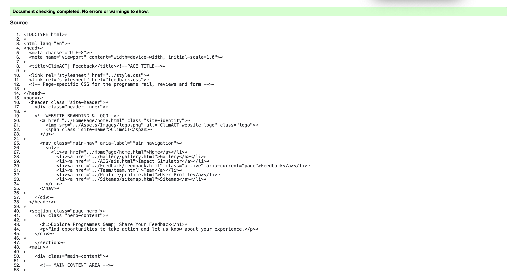
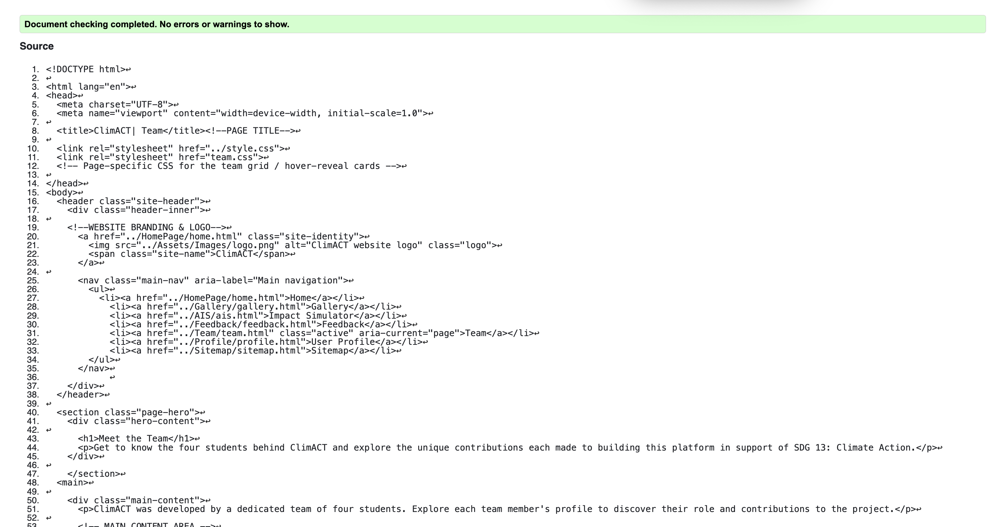
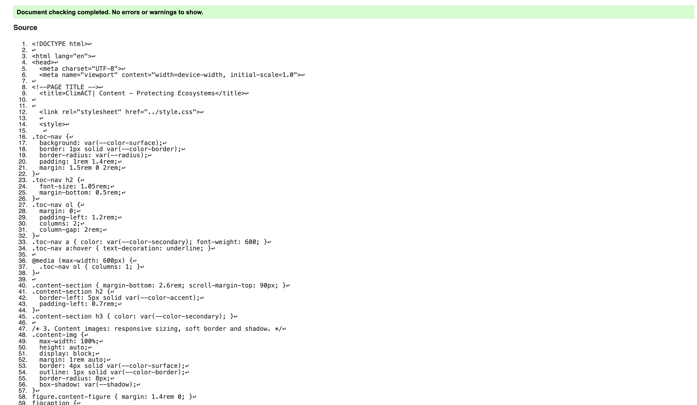

Feedback Page validation report
The Feedback page was validated using the W3C Markup Validation Service. The first check flagged an error caused by the <select> element for programme sorting missing an associated accessible name, and a warning about the inline <script> block lacking a type declaration. The select's labelling was fixed by confirming the <label for="sortPrograms"> association was correctly linked, which resolved the error. The script warning was left as-is since HTML5 no longer requires a type attribute on scripts, and the validator treats it only as an informational note. After these checks the page validated with 0 errors.

Back to Page Editor page
Team Page validation report
The Team page was validated using the W3C Markup Validation Service. One warning was returned regarding the use of <div role="group"> on each team card, noting that a native grouping element could be considered instead, but this did not stop the page from validating successfully. No errors were reported, so the page passed on the first check with 0 errors and only this single accessibility-related warning.

Back to Page Editor page
Content Page validation report
The Content page was validated using the W3C Markup Validation Service. An error was initially reported because one <figcaption> began with a lower-case word straight after a missing article, which the validator did not flag as a markup error but which the linked spell-check tool queried; the genuine markup error was a stray closing tag left over from an earlier edit of the "Restoration and Protection Efforts" section. Removing the stray tag resolved the error, and the page then validated with 0 errors, leaving only a minor warning about the two-column layout order on narrow screens.
